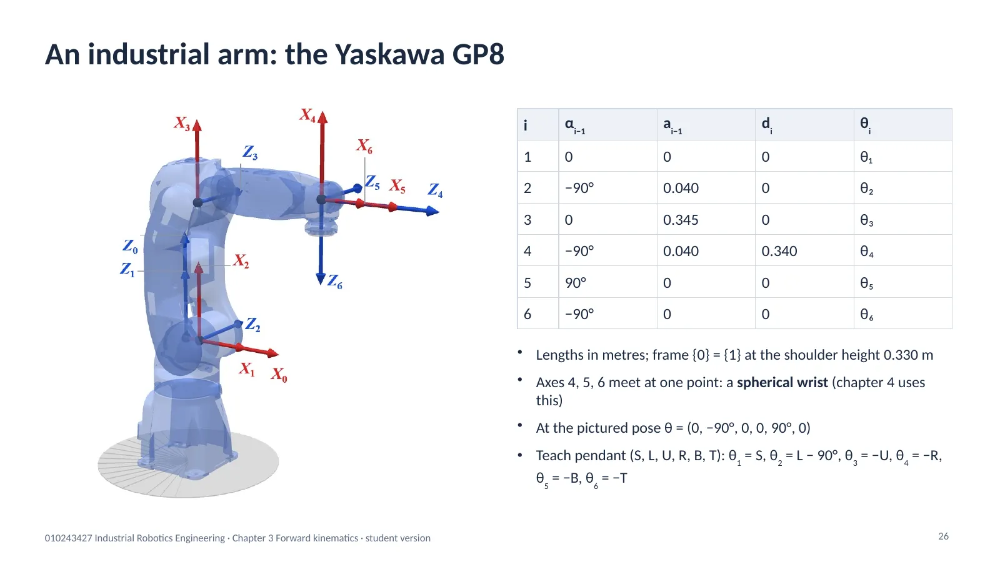
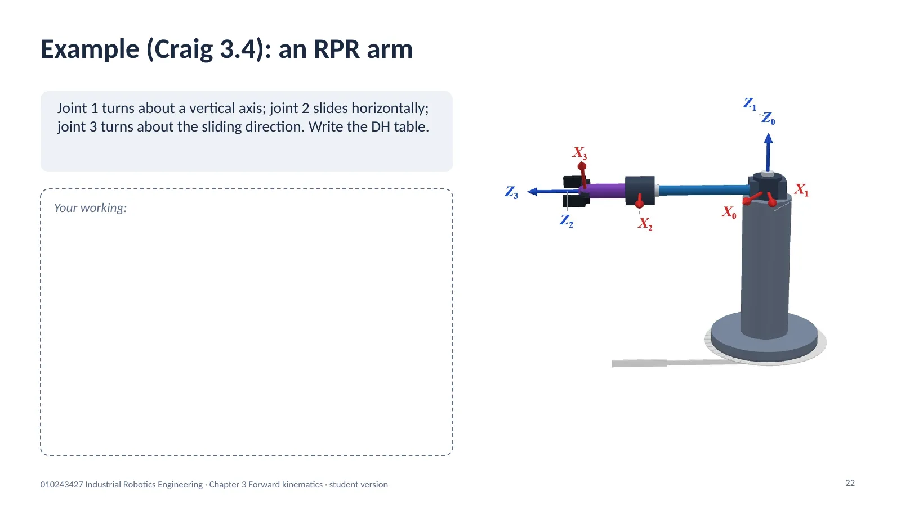
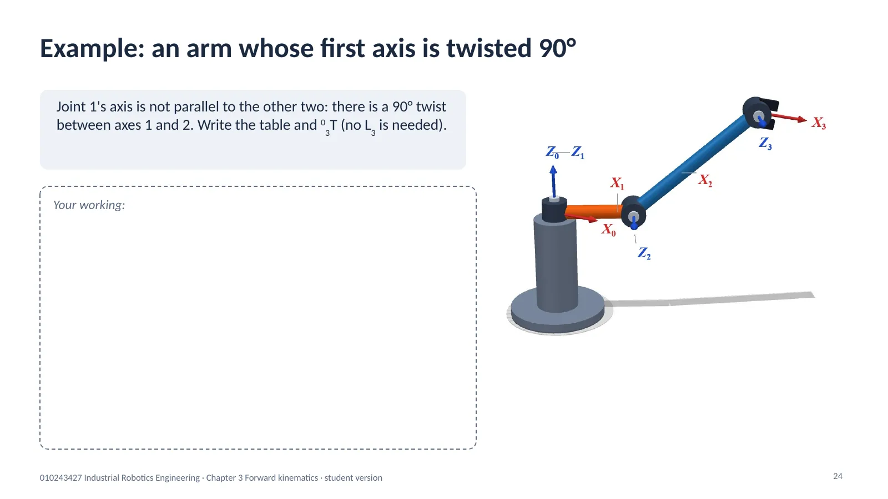
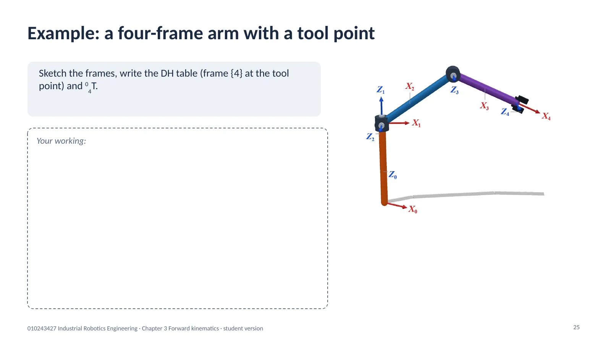
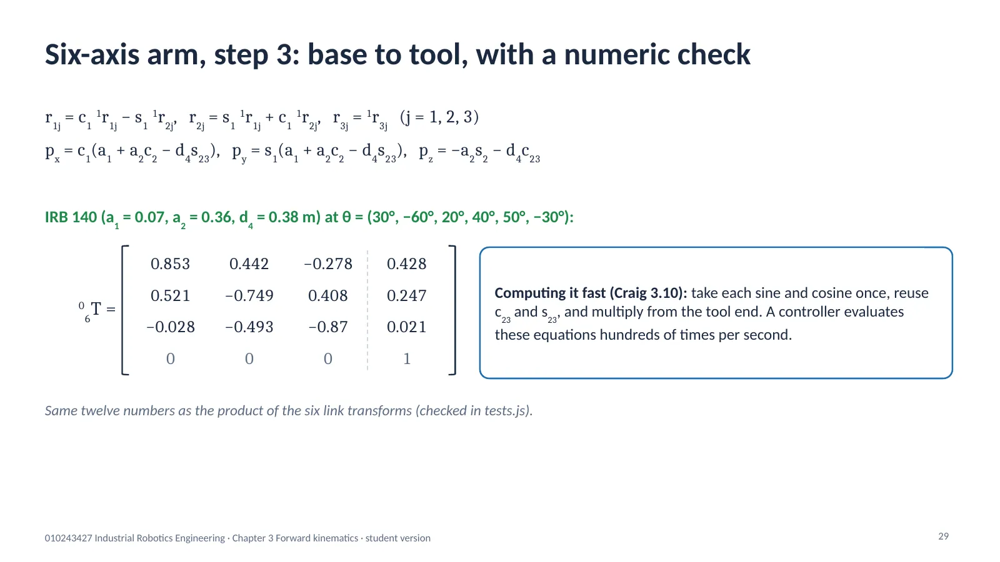
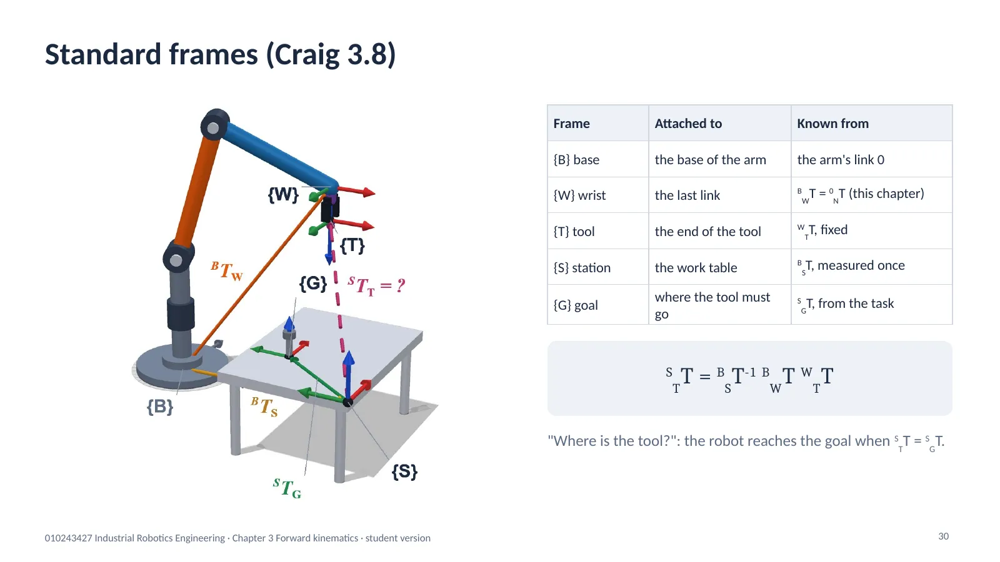

ทุกข้อในหน้านี้ทำสามขั้นเหมือนกัน: ติดเฟรม → เขียนตาราง DH → คูณเมทริกซ์ก้านต่อ เริ่มจากแขน 3 ข้อต่อสามแบบในสไลด์เดิม แล้วทำแขน 6 แกนจริงครบทุกขั้น (เพิ่มจากตำรา Craig 3.7) ต่อด้วยเฟรมมาตรฐาน (Craig 3.8) และช่องตรวจการบ้านชุดที่ 3 ครอบคลุมสไลด์หน้า 22–30 และ 38 มี เครื่องมือ 1 ชิ้น (A) และ 5 โจทย์
Every problem here takes the same three steps: attach frames → write the DH table → multiply the link transforms. First three three-joint arms from the old slides, then a real six-axis arm worked in full (added from Craig 3.7), the standard frames (Craig 3.8) and the answer checks of homework 3. This page covers slides pp. 22–30 and 38, with one tool (A) and 5 problems.





จลนศาสตร์ไปข้างหน้าของแขนให้ ᴮWT (ข้อมือเทียบฐาน) เครื่องมือยื่นจากข้อมือไปอีก ᵂTT (คงที่) และโต๊ะงานอยู่ที่ ᴮST (วัดครั้งเดียวตอนติดตั้ง) จึงตอบได้ว่าเครื่องมืออยู่ที่ไหนเมื่อมองจากโต๊ะ เลื่อนเครื่องมือจนตำแหน่งของ ˢTT ตรงกับ ˢGT (สลักเกลียว)
The arm's forward kinematics gives ᴮWT (wrist relative to base); the tool reaches ᵂTT further (fixed), and the table sits at ᴮST (measured once at installation). So we can say where the tool is, seen from the table. Move the tool until the position of ˢTT matches ˢGT (the bolt).